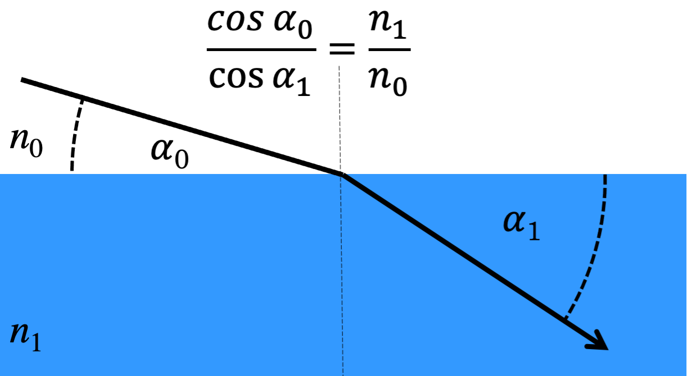

Optical parameters for neutrons and x-rays
Contents
Optical parameters for neutrons and x-rays#
Fresnel reflectivity and refraction in terms of refractive index#
While the refractive index in reflectometry experiments is define the same way as in classical optics (see Wikipedia) the typical choice for the angle \(\alpha\) is with respect to the surface of the sample, not the surface normal.
Thus the Snell’s Law becomes:
Here the \(n_0\) and \(n_1\) are the refractive indices of the material befor and after the interface, respectively.
Equivalently to the reciprocal space definition used in chapter 3 one can calculate the Fresnel reflectivity accoring to these refractive indices:
Refractive index and the scattering length density (SLD)#
For neutrons and x-rays the refractive index is always close to 1. It is convenitently described by the radiation and material dependent scattering length density (SLD) according to:
In the case of neutrons \(\lambda^2 \frac{SLD}{\pi}\) is in the order of \(10^{-6}\) while for x-rays it is around \(10^{-5}\). The SLD is a complex quantity where the imaginary part descirbes effects of absorption. For most elements the absorption for neutrons is negligible.
SLD for neutrons#
In thermal and cold neutrons for most elements the SLD does not depend on the beam energy/wavelength and can be directly calculated from the material density and the elemental coherent scattering length \(b_n\) that are tabulated in (see NIST table):
Where \(\rho_{FU}\) is the number density of the formula unit and the scattering length, \(b_{n_i}\), of all elements in the FU are summed.
Magnetic moments on individual atoms also contribute to the SLD with a sign that depends on the relative orientation to the neutron spin. This is outside of the scope of this chapter.
Refractive index for x-rays#
For x-rays the energy dependance of the SLD can not be ignored, especially close to absorption edges of the elements in the sample material. The scattering Thopson potential leads to a SLD defined as:
$\( SLD_x(E) = \rho_{FU} \sum_{FU}{ \frac{r_e}{2} (f'(E) - i f''(E)) }\)$ # please check this!!!
Here \(r_e = \frac{1}{4\pi}\frac{e^2}{m_e c^2}\) is the classical electron radius (see Wikipedia) and f’ and f’’ are the energy dependent x-ray scattering factors.
Implications of different contrasts for neutrons and x-rays#
We will calculate an example to illustrate the difference the SLD calculation makes to the reflectivity experiment. We will use the simple example of a layer of something on water:
import numpy as np
import matplotlib.pyplot as plt
alpha = np.linspace(0, 6.0, 600) * np.pi/180.
rho_FU_water = 0.03342360 # 1/angstrom³
rho_FU_layer = 0.00461223 # 1/angstrom³
r_e = 2.817940326e-5 # angstrom
SLDn_H2O = rho_FU_water * ( -3.75e-5*2 + 5.83e-5 )
SLDn_D2O = rho_FU_water * ( 6.67e-5*2 + 5.83e-5)
SLDn_layer = rho_FU_layer * ( -3.75e-5*14 + 6.646e-5*6 ) # C6H14
SLDx_water = rho_FU_water * r_e*((1.00001-0.00000j)*2 + 8.05139-0.03156j)
SLDx_layer = rho_FU_layer * r_e*((1.00001-0.00000j)*14 + (6.01934-0.00890j)*6 ) # C6H14
print(f'The neutron values are: {SLDn_H2O=:.4e}, {SLDn_D2O=:.4e}, {SLDn_layer=:.4e}')
print(f'The x-ray values are: {SLDx_water=:.4e}, {SLDx_layer=:.4e}')
File "<fstring>", line 1
(SLDn_H2O=)
^
SyntaxError: invalid syntax
We use the RefNX package to calculate the reflecitity curves:
from refnx.reflect import SLD, ReflectModel, Structure
q = 4*np.pi/1.54*np.sin(alpha)
structure = Structure()
air = SLD(0.0)
structure |= air(50.0, 3.0)
mn_layer = SLD(SLDn_layer * 1e6)
structure |= mn_layer(50.0, 3.0)
mn_H2O = SLD(SLDn_H2O * 1e6)
structure |= mn_H2O(100.0, 3.0)
model = ReflectModel(structure, bkg=0.0)
plt.semilogy(alpha, model(q), label='neutron protonated')
structure = Structure()
air = SLD(0.0)
structure |= air(50.0, 3.0)
mn_layer = SLD(SLDn_layer * 1e6)
structure |= mn_layer(50.0, 3.0)
mn_D2O = SLD(SLDn_D2O * 1e6)
structure |= mn_D2O(100.0, 3.0)
model = ReflectModel(structure, bkg=0.0)
plt.semilogy(alpha, model(q), label='neutron deuterated')
structure = Structure()
air = SLD(0.0)
structure |= air(50.0, 3.0)
mx_layer = SLD(SLDx_layer * 1e6)
structure |= mx_layer(50.0, 3.0)
mx_H2O = SLD(SLDx_water * 1e6)
structure |= mx_H2O(100.0, 3.0)
model = ReflectModel(structure, bkg=0.0)
plt.semilogy(alpha, model(q), label='x-ray')
plt.legend()
plt.xlim(0, None)
plt.ylim(None, 2);

# we should add a second example with more absorption and heavier elements
Retreiving optical parameters from ORSO database#
The ORSO SLD database contains density and scattering information to calculate the optical parameters for various materials. The orsopy package can be used to retreive those programatically.
from orsopy.slddb import api
A search query will return a list of dictionaries with the information from the matching database entries. The search fields are defined as keyword arguments:
result=api.search(formula="Fe")
result
[{'ID': 26,
'validated': '2021-11-18 22:35:52',
'validated_by': 'Artur Glavic <artur.glavic@psi.ch>',
'name': 'Iron',
'description': '',
'formula': 'Fe',
'HR_formula': None,
'density': 7.874,
'FU_volume': None,
'SLD_n': None,
'SLD_x': None,
'E_x': None,
'mu': 0.0,
'physical_state': 'solid',
'tags': [],
'ref_website': 'https://github.com/pkienzle/periodictable',
'reference': 'Python module periodictable, \ndata source: ILL Neutron Data Booklet',
'doi': None,
'purity': None,
'CAS_No': None,
'crystal_data': None,
'temperature': None,
'magnetic_field': None,
'data_origin': 'textbook',
'comments': None},
{'ID': 106,
'validated': None,
'validated_by': None,
'name': 'Fe ',
'description': None,
'formula': 'Fe',
'HR_formula': None,
'density': 7.874,
'FU_volume': None,
'SLD_n': None,
'SLD_x': None,
'E_x': None,
'mu': 2.2,
'physical_state': 'solid',
'tags': ['magnetic'],
'ref_website': None,
'reference': 'Christy Kinane',
'doi': None,
'purity': None,
'CAS_No': None,
'crystal_data': None,
'temperature': None,
'magnetic_field': None,
'data_origin': 'unspecified',
'comments': None}]
m=api.material(ID=26)
m
Material([('Fe', 1.0)], fu_volume=11.77708968431255)
print(f'Neutron SLD is: {m.rho_n}')
print(f'X-Ray SLD for Cu k-alpha is: {m.rho_of_E(8.0478)}')
Neutron SLD is: (8.024053695190667e-06-6.044804995824017e-10j)
X-Ray SLD for Cu k-alpha is: (5.983011590323767e-05-7.533605403282578e-06j)
E, rho = m.rho_vs_E()
plt.loglog(E, rho.real, label='SLD real part')
plt.loglog(E, -rho.imag, label='SLD -imaginary')
plt.ylabel('Value')
plt.xlabel("Energy / keV")
plt.ylim(1e-6, None)
plt.legend();